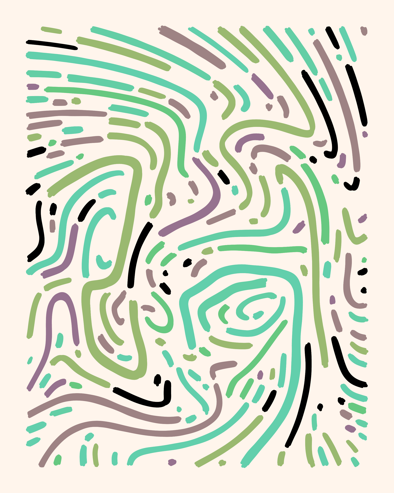
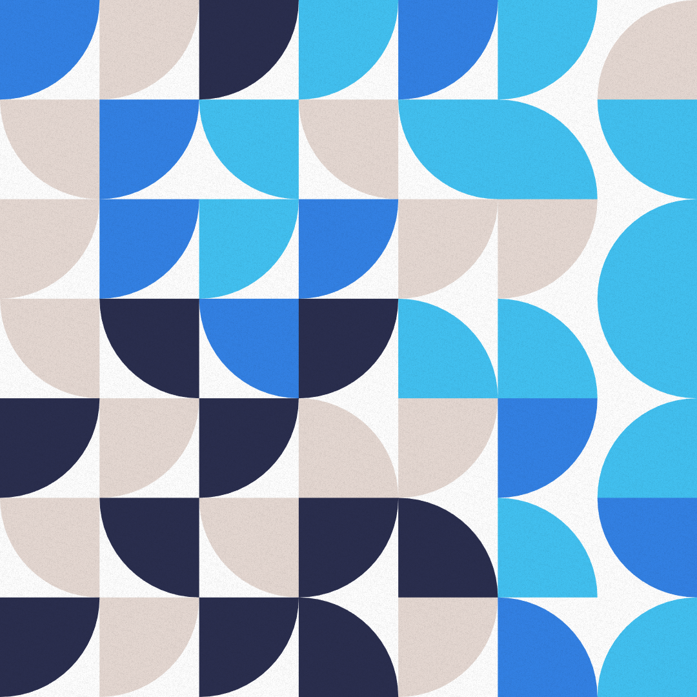
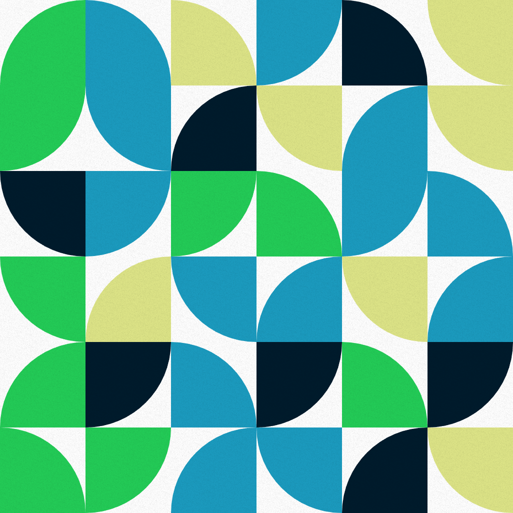
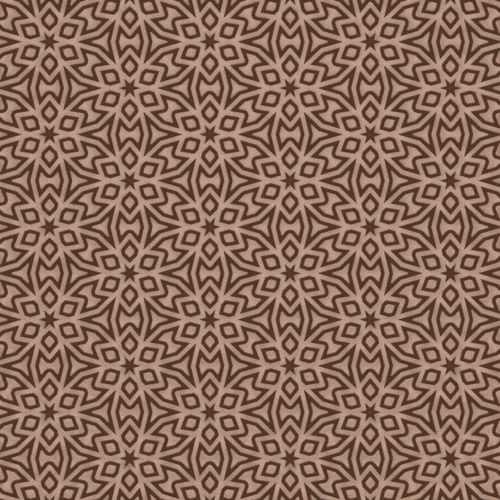
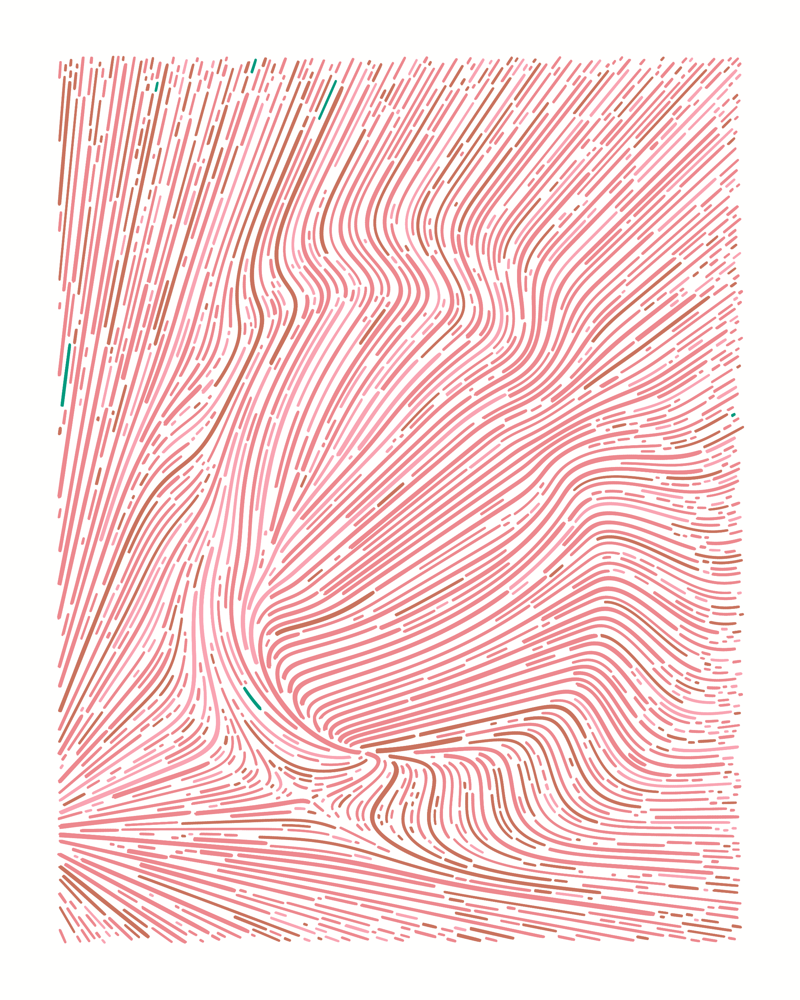
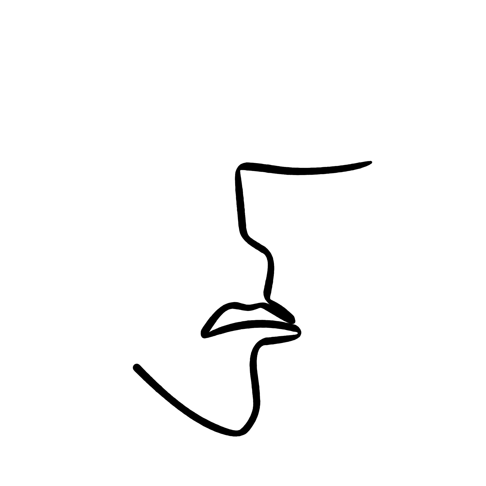
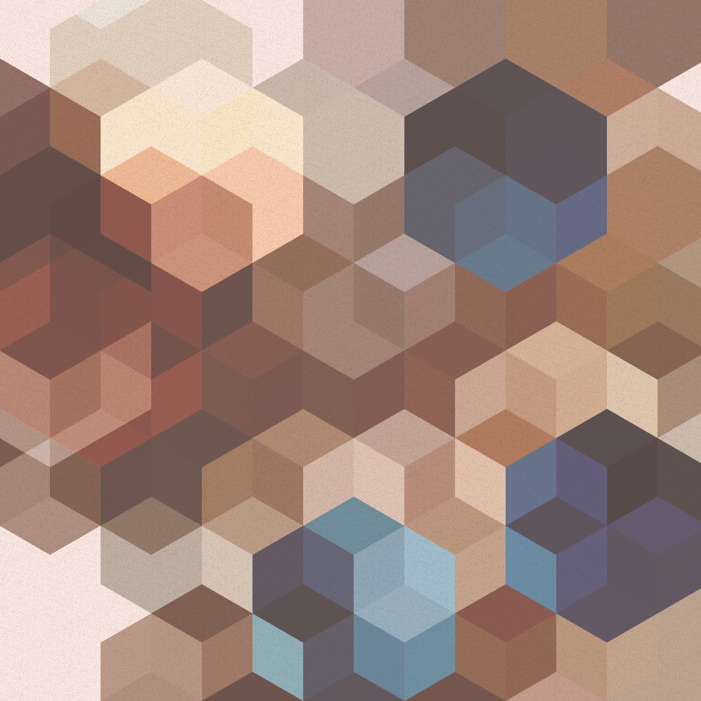
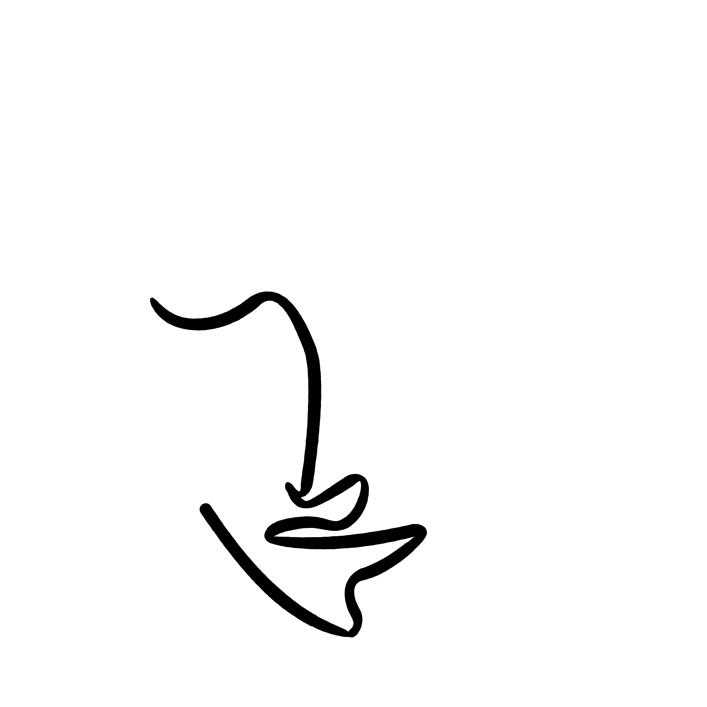
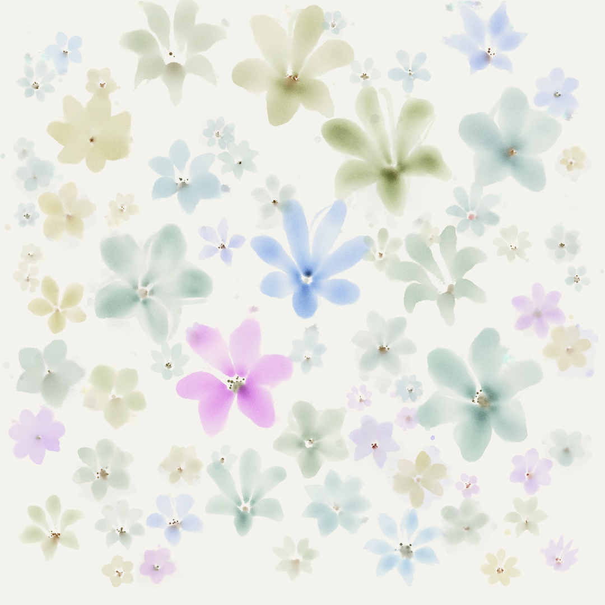
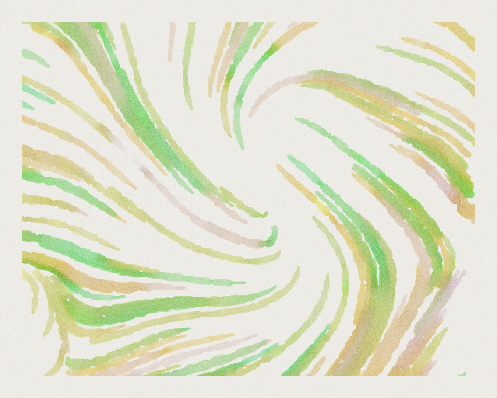

Selected works















I create artworks using algorithms, code, and math. It is called generative art, or more specifically, algorithmic art. (No, it’sn’t AI. And no NFTs!)
My art programs are usually written in JavaScript using p5.js. Have a look at some of the pieces below!









